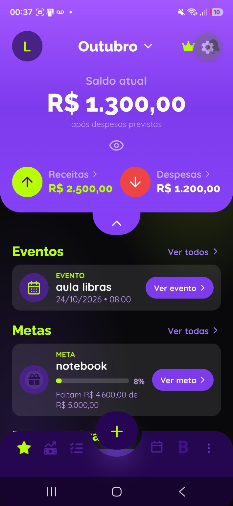
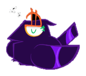
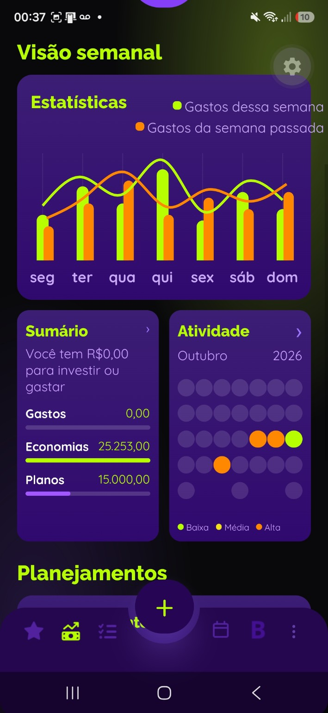
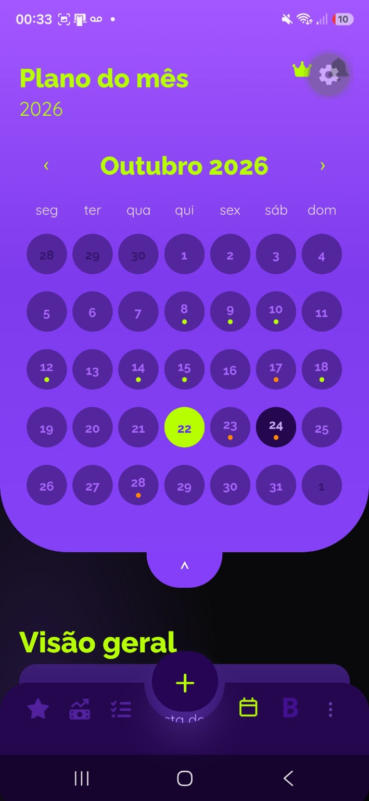
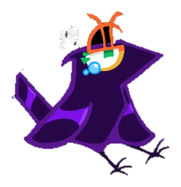
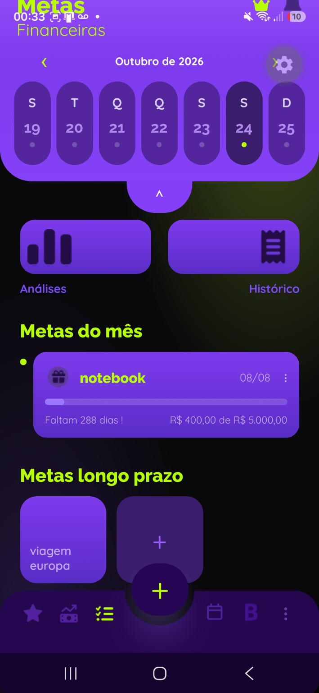
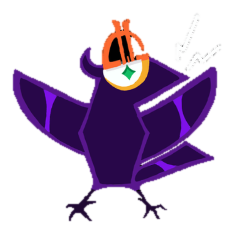
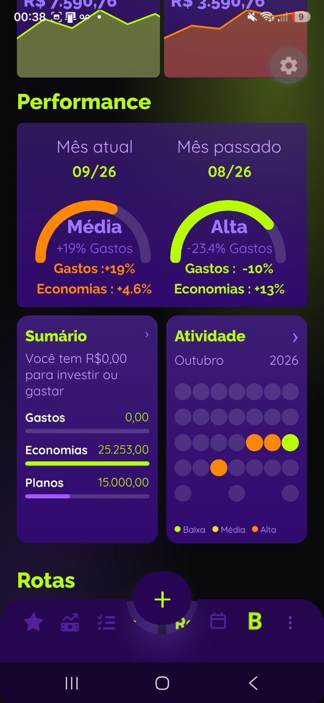

Gestão
financeira
Registre receitas, despesas e categorias e entenda para onde vai seu dinheiro.
Ver testeOrganização financeira simples, visual e feita para o seu dia a dia.
Visualize entradas, saídas, compromissos e metas com mais clareza. O Finnitus ajuda você a antecipar seus gastos e tomar decisões melhores, sem complicar o planejamento.


O Finnitus é um aplicativo de organização e planejamento financeiro criado para transformar informações do dia a dia em decisões mais conscientes.
Acreditamos que cuidar do dinheiro não precisa ser complicado. Com organização, metas e planejamento para imprevistos, você ganha clareza para construir o que importa.
Descubra o que o Finn pode fazerFerramentas para acompanhar sua vida financeira com mais clareza.
Registre receitas, despesas e categorias e entenda para onde vai seu dinheiro.
Ver testeTenha uma visão visual dos saldos, gastos e evolução do planejamento.
Ver testeVisualize movimentações, eventos financeiros e datas importantes.
Ver testeDefina seus objetivos, acompanhe o progresso e registre aportes.
Ver testeReorganize seu planejamento quando os imprevistos aparecerem.
Ver testeClique em uma funcionalidade acima para rolar até esta área e visualizar um exemplo da experiência do Finnitus.
Organize receitas, despesas e categorias em uma visualização simples.

A tela inicial já mostra saldo, receitas, despesas, eventos e metas para facilitar o controle financeiro do dia a dia.


Com gráficos, atividade e visão semanal, o dashboard ajuda a interpretar padrões e acompanhar sua evolução financeira.

O calendário inteligente permite antecipar compromissos, vencimentos e movimentações ao longo do mês.


Na área de metas, você acompanha objetivos de curto e longo prazo com progresso visual e organização por período.


O Plano B oferece análises, rotas e recomendações para reorganizar o planejamento quando surgirem imprevistos.
Em nosso vídeo de apresentação, você vai entender o propósito do projeto, conhecer a experiência do aplicativo e descobrir como tudo começou.
A história por trásMais do que registrar valores: uma experiência criada para ajudar você a pensar adiante.
Informações organizadas para visualizar sua realidade financeira.
Objetivos acompanhados de perto, com progresso visível.
Recursos que ajudam a repensar os próximos passos diante de imprevistos.
Esse espaço será preenchido com relatos autorizados de quem testar o Finnitus.
Em breve, uma experiência real de quem experimentou nossas funcionalidades.
Feedbacks de usuários vão ajudar a contar a história do Finnitus.
A construção de um aplicativo melhor também passa por quem o utiliza.
Uma equipe unida para tornar a organização financeira mais acessível.
Gerenciamento do projeto e desenvolvimento backend.
Desenvolvimento e integração dos serviços backend.
Desenvolvimento frontend e documentação.
Prototipação das interfaces e desenvolvimento frontend.
Algumas respostas para você conhecer o Finnitus com mais tranquilidade.
É um aplicativo de organização e planejamento financeiro com ferramentas para movimentações, visualização de dados, calendário, metas e planejamento para imprevistos.
O botão de download será ativado quando o aplicativo estiver disponível na Google Play. Até lá, acompanhe as novidades do projeto por aqui.
A disponibilidade para iOS ainda não foi confirmada. Informaremos as plataformas atendidas no lançamento.
O projeto foi concebido com funcionalidades de registro e acompanhamento de informações financeiras. A integração com contas bancárias não faz parte da proposta inicial de lançamento.
A equipe documentará as práticas efetivamente implementadas e disponibilizará a política de privacidade antes da publicação definitiva.
É uma funcionalidade pensada para ajudar a reorganizar o planejamento financeiro quando aparecem despesas inesperadas.
Você poderá entrar em contato pelos canais oficiais que serão publicados na área de contato deste site.
Conheça o Finnitus e prepare-se para planejar com mais liberdade.
Quer saber mais sobre o projeto, compartilhar sugestões ou conversar com nossa equipe? Teremos prazer em conhecer sua mensagem.